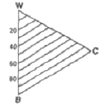

컬러리스트기사 (2012-05-20 기출문제)
1과목: 색채심리 마케팅
1. 색채 시장조사 방법 중 설문작성방법으로 적절한 것은?
- 개인의 신분을 나타내는 인구사회학적 질문을 가능하면 설문지의 첫머리에 배치하는 것이 좋다.
- 설문의 구성은 내용과 관련된 구체적인 질문에서 전반적인질문으로 배치한다.
- 각각의 질문에는 하나 이상의 내용을 구체화하고,응답자에게 특정대답을 유도하는 질문을 한다.
- 각 질문은 문법적으로 정확한 어휘를 사용하고 전문적인 용어는 피하는 것이 좋다.
(정답률: 알수없음)

2. 문화권마다 색채사용의 언어는 그 차이를 보인다. 문화가 발달될수록 검정, 하양 – 빨강 – 초록 - 노랑 – 파랑 – 갈색 – 보라 - 분홍 - 주황 - 회색 등의 색이름으로 진화된다고 설명한 학자는?
- Itten
- Birren
- Kandisky
- Berlin&Kay
(정답률: 알수없음)
3. 신문 매체를 활용하는데 있어서는 장점이 아닌 것은?
- 대량의 도달범위
- 높은 CPM
- 즉시성
- 카탈로그 가치
(정답률: 알수없음)
4. 컬러 마케팅에 종종 사용되는 매슬로우(Maslow)의 욕구 단계 중 가장 상위계층에 속하는 것은?
- 생리적 욕구단계
- 안전 욕구단계
- 사회적 욕구단계
- 자아실현 욕구단계
(정답률: 알수없음)
5. 마케팅에서 색채의 기능에 대한 설명으로 틀린 것은?
- 홍보전략을 위해 기업컬러를 적용한 신제품을 출시하였다.
- 컬러 커뮤니케이션은 측색 및 색채관리를 통하여 제품이 가진 이미지나 브랜드의 의미를 전달한다.
- 상품자체는 물론이고 브랜드의 광고에 사용된 색채를 소비자의 구매력을 자극한다.
- 마케팅 목표를 달성하게 위해 색채를 적합하게 구성하고 이를 장기적, 지속적으로 개선해나간다.
(정답률: 알수없음)
6. 어떤 색을 잠시 본뒤에 다른 색으로 시선을 옮겼을 때, 잔상의 영향으로 본래의 색과 다르게 보이는 현상은?
- 계시대비
- 색음현상
- 동시대비
- 연변대비
(정답률: 84%)
7. 홍보, 광고 매체 중 TV의 특성에 대한 설명이 틀린 것은?
- 표적고객을 선별할 수 있고 충분한 제품설명이 가능하다.
- 시,청각에 동시에 소구할 수 있으며 반복효과가 크다.
- 접근범위가 넓고 속도가 빠르기에 즉효성이 있다.
- 많은 규제와 시민적 반감이 있다.
(정답률: 알수없음)
8. 일반적인 색채 경험으로 사람들에게 인지되어 있는 이미지 중 정열, 힘, 역동을 상징하는 색채는?
- 노랑
- 파랑
- 빨강
- 검정
(정답률: 알수없음)
9. 브랜드 개념의 관리는 도입기,심화기,강화기 순으로 나눌 수 있다. 브랜드 유형에 따른 관리의 단계와 설명이 틀린 것은?
- 효능충족 브랜드는 일상생활에서 실제적인 문제를 해결해 줄 수 있어야 한다.
- 긍지추구 브랜드는 도입기에 구매 제한성을 강조한다.
- 경험유희 브랜드는 강화기에 동일한 이미지통합 전략으로 라이프스타일을 형성하게 한다.
- 브랜드 개념의 관리단계는 시장 상황에 따라 피동적으로 변해야 한다.
(정답률: 알수없음)
10. 다음 중 색채사용이 가장 합리적인 것은?
- 안전색채를 고려하여 색채계획을 할 경우,박명시 현상을 고려해야 한다.
- 도시환경 구성요소 중 하나인 자동차의 색채를 명시도가 낮은 저채도를 사용하여 눈을 자극하지 않아야 한다.
- 색채의 감정효과를 고려하여 자율신경인 교감신경의 긴장감을 풀기 위해 한색을,부교감 신경의 긴장을 높이기 위해 난색을 사용한다.
- 사회·문화 정보로서의 색이 가지는 특성을 고려하여 서양 문화권의 제품색채를 주황색으로 계획하여 새 생명의 탄생을 연상시키고자 한다.
(정답률: 알수없음)
11. 색채 시장조사의 과정에서 타깃 소비자의 욕구를 파악하는 방법으로 가장 적절한 것은?
- 현재 시장에서 사회,문화,기술적 환경의 변화를 종합적으로 파악
- 시나리오 기법으로 예측
- 현재 시장에서 변화의 의미를 자사의 관점에서 파악
- 끊임없는 미래의 추세에 대한 새로운 가능성 시도
(정답률: 알수없음)
12. 설문조사를 실시한 후 각 변수들 간의 관련성을 분석하고, 각 변수들이 어느 정도 밀접한 관련성이 있는가를 알 수 있는 통계분석 방법은?
- 상관관계분석
- 교차 분석
- 빈도 분석
- 산술평균
(정답률: 알수없음)
13. 색채심리마케팅에서 광고기획과 매체전략에 관한 설명으로 틀린 것은?
- 광고는 판촉을 위한 목적이므로 과학적인 목표, 팀워크, 예산, 소구점, 전략전술, 경쟁사, 고객변화 등에 대한 철저한 준비가 필요하다.
- 광고의 목표인 판촉 극대화를 위해서는 과장, 허위, 은어, 외설어의 적절한 사용은 허용된다.
- 섹스어필광고는 일시적인 효과를 거둘 수 있으나 기업이 도덕적으로나 교육상 좋지 못하므로 장기적으로 피하는 것이 좋다.
- “이 광고 참 좋구나” 보다는 “이 광고상품 어디 가면살 수 있지?”라는 광고접근이 가장 절실한 요구사항이다.
(정답률: 알수없음)
14. 색채 정보 수집 설문지 조사를 위한 조사자 사전교육에 관한 내용과 가장 거리가 먼 것은?
- 조사의 취지와 표본 선정 방법에 대한 이해
- 조사 자료의 분석방법
- 면접과정의 지침
- 참가자의 응답에 영향을 주지 않도록 중립적이고 객관적인 태도 유지
(정답률: 알수없음)
15. 시장세분화전략에 따른 마케팅 기법은?
- 대량마케팅(massmarketing)
- 다양화마케팅(productvarietymarketing)
- 표적마케팅(targetmarketing)
- 개별마케팅(individualmarketing)
(정답률: 알수없음)
16. KSSISO3864-2안전색 및 안전표지에서 위해도 패널 중 경고의 의미로 위험도가 중간 정도임을 표시하는 패널의 바탕색과 대비색은?
- 빨강, 하양
- 주황, 검정
- 노랑, 검정
- 빨강, 검정
(정답률: 알수없음)
17. 다음 중 색채이미지와 표현하는 컬러와의 관계가 적합하지 않은 것은?
- 라틴계 민족은 난색계를 선호한다.
- 북구계 민족은 한색계를 선호한다.
- 생후 6개월부터 원색을 구별할 수 있다.
- 지적 능력이 높은 사람은 장파장계열의 색을 선호한다.
(정답률: 알수없음)
18. 마케팅 믹스에 포함되지 않는 것은?
- Product
- Price
- Principle
- Promotion
(정답률: 알수없음)
19. 안전색으로 사용할 5R4/13의 용도는?
- 글자
- 경고
- 지시
- 안내
(정답률: 알수없음)
20. 소비자 행동측면에서 살표볼 때 국내기업이 라이센스 비용을 지불하면서도 외국기업의 유명 브랜드를 들여오는 가장 큰 이유는?
- 일반적으로 소비자들이 유명하지 않은 상표보다는 유명한 상표에 자신의 충성도를 이전시킬 가능성이 높기 때문
- 해외 브랜드는 소비자 마케팅이 수월하기 때문
- 국내 브랜드에는 라이센스의 다양한 종류가 없기 떄문
- 외국 브랜드 이름에서 오는 이미지로 인해 소비자 행동이 이루어지기 때문
(정답률: 알수없음)
2과목: 색채디자인
21. 디자인의 요건에 관한 설명 중 적절하지 않는 것은?
- 실제 목적이 알맞게 디자인하기 위해서는 과학적 기초위에서 합목적성을 추구하는 것이 좋다.
- 피조물,사물의 부분적 변형이나 기성디자인의 부분적 변형으로 창조적 디자인을 추구해야 한다.
- 현대 디자인은 빠르게 변하는 정보사회의 요구에 부응하기 위해 관습적,토속적 디자인 요소를 유기적으로 적용해야 한다.
- 현대 디자인은 점차로 자연과의 공생과 상생이라는 측면에서 검토되고 있다.
(정답률: 알수없음)
22. 유니버셜 디자인의 원칙과 거리가 먼 것은?
- 일반인이 아닌 지체부자유자나 노약자를 위한 특수한 사람들을 위한 디자인이다.
- 제품과 디자인에 대하여 사람마다 자기 나름대로 사용방법을 선택할 수 있게 한다.
- 실수로 잘못 조작하더라도 바로 사고로 이어지거나 상황이 위험해지는 일이 없도록 디자인 한다.
- 사용 중 피로를 최소화하며 효과적이고 편안하게 사용할 수 있게 디자인 한다.
(정답률: 알수없음)
23. 친환경적 디자인(EnvironmentFriendlyDesign)을 실현하는데 있어 고려해야 할 사항으로 적합하지 않은 것은?
- 다양한 소재를 활용한 디자인
- 제품 수명 연장을 위한 디자인
- 재활용 디자인
- 효율적 수거를 위한 디자인
(정답률: 알수없음)
24. 시장 세분화(marketsegmemtation)의 방법이 아닌 것은?
- 연령, 성별, 수입, 직업별로 나누는 인구학적 세분화
- 지역, 도시 크기,인구밀도 등으로 나누는 지리적 세분화
- 문화, 종교, 사회 계층 등으로 나누는 사회 문화적 세분화
- 제품의 색상이나 외관 등에 의한 이미지 세분화
(정답률: 54%)
25. 산업디자인의 발전과 직접적인 관련이 없는 것은?
- 대량생산
- 노만 벨 게데스
- 모던 무브먼트(modernmovement)
- 길드
(정답률: 알수없음)
26. 좋은 디자인의 조건으로 거리가 먼 것은?
- 최소의 경비로 최대의 효과를 얻을 수 있는 디자인
- 창의적이고 독창적인 디자인
- 최신 유행만을 반영한 디자인
- 사용자의 편의를 고려한 디자인
(정답률: 알수없음)
27. 색채정보수집을 위해 가장 많이 적용되는 연구방법은?
- 표본조사법
- 조사연구법
- 실험연구법
- 현장관찰법
(정답률: 알수없음)
28. 색채 디자인에 활용되는 색채 조절과 거리가 먼 것은?
- 색채 조절이란 색채 효과를 기능적으로 활용하는 것을 말한다.
- 색채 조절이 활용되는 영역은 교통시설, 위험방지, 공장과 사무실 디자인, 병원, 건물 등의 색채 계획이다.
- 색채 조절은 가급적 보색대비를 많이 적용하여 잔상효과를 높여야 한다.
- 색채 조절이 잘 이루어지면 눈의 긴장과 피로를 적게 하는 효과가 있다.
(정답률: 알수없음)
29. 다음 중 패션디자인의 주요소와 비교적 거리가 먼 것은?
- 선
- 재질
- 색채
- 장식
(정답률: 알수없음)
30. 시각 디자인의 목적에 따른 분류에 관한 설명 중 틀린 것은?
- 지시적 기능 : 신호
- 설득적 기능 : 일러스트레이션
- 상징적 기능 : 심볼
- 기록적 기능 : 사진
(정답률: 알수없음)
31. 다음 디자인의 조건 중 한정된 경비로 최상의 디자인을 창출하는 것은?
- 심미성
- 합목적성
- 독창성
- 경제성
(정답률: 70%)
32. 감성공학에 대한 설명으로 옳은 것은?
- 일본의 소니(Sony)사에서 처음으로 감성공학을 제품에 적용하였다.
- 인간의 감성을 정량적으로 분석,평가하는 기술이다.
- 감성공학의 최종적인 목표는 제품 생산자의 정서적 안정을 위한 것이다.
- 감성공학과 제품의 구매력과는 상관관계가 없다.
(정답률: 알수없음)
33. 20대 초반 대학생들의 선호색을 고려하여 파란색 캐주얼 가방을 디자인하였다. 이와 같은 색채 기획은 다음의 색채 기획 방법 중 어떤 점을 고려한 기획인가?
- 문화권별 색채 선호를 고려한 기획
- 인구통계학적 특성을 고려한 기획
- 시장가격을 고려한 기획
- 친환경적 색채를 고려한 기획
(정답률: 알수없음)
34. 과거의 전통적 인습을 배제하고 새로운 시각디자인의 원리를 조형적으로 실현할 목적으로 오스트리아에서 전개한 운동은?
- 데스틸(Destijl)
- 시세션(Secession)
- 큐비즘(Cubism)
- 아르데코(ArtDeco)
(정답률: 알수없음)
35. 형태 지각심리(gestaltpsychology)의 4개 법칙에 해당되지 않는 것은?
- 보완성
- 근접석
- 유사성
- 폐쇄성
(정답률: 알수없음)
36. 다음 중 서유럽에서 근대 디자인 운동의 직접적 배경이 되는 주요사건으로 묶은 것은?
- 과학혁명 – 민주주의 혁명 – 산업혁명 – 대량생산 체계도입
- 르네상스 발흥 – 신대륙발견 – 원거리교역 - 중상주의
- 십자군운동 – 종교개혁 – 식민지 개척 – 공산주의 혁명
- 제2차 세계대전 – 냉전체제 형성 – 대량소비사회 대두 – 핵 에너지 활용
(정답률: 알수없음)
37. 대칭에 대한 설명 중 틀린 것은?
- 좌우대칭의 예는 자연의 동식물, 여러 가지 구조물, 사원의 건축, 전통적 가구 등이다.
- 방사대칭은 180도 회전하여 얻어지는 변화가 큰 대칭으로 시효과를 낸다.
- 비대칭은 형태상으로 불균형이지만 보는 사람에게 안정감을 주는 변화가 있는 개성적 표현이다.
- 대칭은 질서를 주기 좋고 통일감을 얻기 쉬우나, 엄격하고 딱딱한 느낌을 줄 수도 있다.
(정답률: 24%)
38. 바우하우스 교수 중 색채를 가장 중요시하게 교육했던 사람은?
- 요하네스 이텐
- 요셉 알버스
- 클레
- 칸딘스키
(정답률: 알수없음)
39. 패션 디자인의 용어 중 틀린 것은?
- 엠파이어 스타일(empirestyle):고전주의를 표방한 복식의 한 형태로 옷감은 얇고 비치는 것이나 몸에 감기는 부드러운 소재를 사용하였다.
- 데꼴라쥬(decolletage):네크라인을 V,U자형으로 깊게 파서 목과 가슴이 대담하게 노출되도록 하여 인체 곡선미를 강조하였다.
- 버슬(Bustle):천을 그대로 허리에 둘러서 그 끝은 허리에 끼워 입거나 천 위에 돌려서 입는 가장 간단한 의복이다.
- 퀄팅48516 (quilting):한국의 전통 누비 기법과 유사하며 현재에는 하나의 예술기법으로도 활용되고 있다.
(정답률: 알수없음)
40. 제품의 색채계획(Productcolorplanning)에 대한 설명 중 틀린 것은?
- 소비자의 입장보다는 제품 자체의 재질로 색을 결정한다.
- 누가, 어디서, 언제 제품을 사용할 것인지 충분히 연구한다.
- 방안의 무드를 파괴할 것 같은 현란한 색의 가구와 같은 경우는 피한다.
- 제품의 정면, 배면, 상면 등 모두에 걸쳐서 색채계획이 이루어진다.
(정답률: 알수없음)
3과목: 색채관리
41. 다음 중 디지털 색채 시스템이 아닌 것은?
- HSB시스템
- NCS시스템
- LAB시스템
- RGB시스템
(정답률: 알수없음)
42. 다음 중에서 육안 조색시 가장 적절한 조도는?
- 약 1000lX
- 약 700lx
- 약 500lx
- 약 300lx
(정답률: 알수없음)
43. CCM의 특성으로 볼 수 없는 것은?
- 스펙트럼 데이터를 이용하므로 아이소머리즘을 실현할 수 있다.
- 컬러런트의 양을 조절하므로 조색에 걸리는 시간을 단축할 수 있다.
- 최소량의 컬러런트를 사용하여 조색하므로 원가가 절감된다.
- CCM에서 조색된 처방은 여러 소재에 적용할 수 있다.
(정답률: 17%)
44. 육안조색에 있어서 색채 조절시 주의할 점이 아닌 것은?
- 명도의 차이
- 채도의 차이
- 색상의 방향과 정도
- 색상 대비의 차이
(정답률: 알수없음)
45. 2도 시야와 10시야의 차이점을 옳게 설명한 것은?
- 2도 시야의 색채는 10도 시야의 색채에 비하여 밝게 보인다.
- 2도 시야의 색채는 10도 시야의 색채에 비하여 채도가 증가한다.
- 2도 시야 색채와 10도 시야의 색채는 주로 색상에서 차이가 난다.
- 2도 시야의 색채는 10도 시야의 색채에 비하여 연색성이 높다.
(정답률: 알수없음)
46. 다음 중 광원과 색온도에 대하여 옳게 설명한 것은?
- 낮은 색온도는 시원한 색에 대응하고, 높은 색온도는 따뜻한 색에 대응된다.
- 백열등과 열 광원은 상관 색온도로 구분하고,열광원이 아닌 경우는 흑체의 색온도로 구분한다.
- 색온도는 광원의 실제 온도와 반드시 일치하는 것은 아니다.
- 형광등은 자체가 뜨거워져서 빛을 내는 열광원이다.
(정답률: 알수없음)
47. 원자 또는 분자의 분광 스펙트럼에 대하여 설명한 것으로 틀린 것은?
- 분자의 회전 진동은 원적외선 또는 마이크로파 영역에 해당하는 에너지를 갖고 있다.
- 극지방에서 볼 수 있는 푸른색의 오로라는 질소분자가 이온화 되어서 나타나는 것이다.
- 원자의 구조에 따라 고유의 색깔을 나타내는데,칼슘을 태우면 노란색이 보이는 것은 그 예이다.
- 얼음에서 옅은 푸른색이 보이는 것은 물 분자의 수소결합에 의한 영향 때문이다.
(정답률: 알수없음)
48. 색채 측정 및 관리의 방안으로 틀린 것은?
- 색채관리는 조색기술과 품질관리기술로 구분할 수 있다.
- 색채관리는 정확한 측정과 평가가 바탕이 되어, 정확성과 정밀성을 고려하여야 한다.
- 색채계는 필터식 색채계와 분광식 색채계의 두 가지가 있다.
- 색좌표의 차이로 지정되는 색차보다 더욱 정밀한 색채관리가 필요할 때는 먼셀 북을 사용한다.
(정답률: 알수없음)
49. 일반적인 안료와 염료에 대한 설명으로 틀린 것은?
- 안료는 물이나 유지에 용해되지 않은 성질이 있는데 대하여 염료는 물에 용해된다.
- 무기안료와 유기안료의 분류기준은 발색성분에 따른다.
- 유기안료는 무기안료에 비해서 내광성이나 내열성이 우수한 장점이 있다.
- 염료는 물 및 대부분의 유기용제에 녹아 섬유에 침투하여 착색되는 유색물질을 일컫는다.
(정답률: 알수없음)
50. 일광견뢰성 시험과 관련된 사항 중 옳은 것은?
- 광원의 자외선 영역보다 적외선 영역이 더 큰 영향을 미친다.
- 가속실험을 위하여 인공광원을 사용한다.
- 일광노출 전후의 명도의 변화를 관측한다.
- 일광견뢰성이 우수한 제품은 어떠한 경우에도 탈색이 되지 않는다.
(정답률: 알수없음)
51. 표면색의∙시감 비교 방법에 대한 설명으로 틀린 것은?
- 조명의 균제도(최대조도와 최소조도의 비율)는 1.0.이상이어야 한다.
- 시료면 및 표준면의 법선에 대하여 45도 방향을 중심으로 하여 확산적으로 조명한다.
- 시료면 및 표준면의 모양이나 크기를 조정할 필요가 있는 경우에는 마스크를 사용한다.
- 자연광일 경우 일출 후 3시간부터 일몰 3시간 전까지의 광원을 사용한다.
(정답률: 알수없음)
52. 색채측정 결과와 함께 반드시 밝혀야 할 측정조건으로 옳은 것은?
- 표중관의 종류,측정시험자의 이름,측정일시
- 표준광의 종류,표준관측자의 시야각,조명과 관측조건
- 조명과 관측조건,측정장소,측정일시
- 측정시험자의 이름,표준관측자의 시야,측정일시
(정답률: 42%)
53. 태양은 자연광원으로 하루 동안 일출,점오,일몰을 거치면서 다른 색온도를 갖는다. 다음 중 가장 색온도가 높은 경우는?
- 아침 여명
- 한낮의 태양
- 맑은 하늘
- 저녁 노을
(정답률: 알수없음)
54. 다음 분광반사율의 설명으로 틀린 것은?
- 물체 고유의 특성으로 색채를 결정짓는 중요한 요소이다.
- 색채시료에 입사하는 빛이 반사할 때 각 파장별로 물체의 특성에 따라 반사율이 다르기 때문에 나타난다.
- 채도가 높은 색은 분광반사율의 파장별 차이가 적어지고, 채도가 낮은 경우는 그 차이가 크게 나타난다.
- 같은 색이라도 염료의 종류에 따라 따라질 수가 있다.
(정답률: 알수없음)
55. 조건등색지수를 구하는 방법에 대한 설명이 틀린 것은?
- 기준광은 원칙적으로 KSC0074에 규정하는 표준광 D65를 사용한다.
- 파장간격 30nm또는 40nm에서 합산을 한 경우는 그 사실을 명기한다.
- 조건등색지수 M은 기준광의 종류 및 시험광의 순으로 기재한다.
- X10Y10Z10색 표시계를 사용한 경우는 M의 첨자 10을 붙인다.
(정답률: 알수없음)
56. 디지털 입∙출력 시스템에 대한 설명이 틀린 것은?
- 모션캡쳐 : 몸에 센서를 부착하고 그 동작을 데이터화 하여 가장 캐릭터가 같은 동작으로 애니메이션 되도록 하는 장치이다.
- 3D스캐너 : 회전하는 플랫폼 위에 대상을 올려놓고 레이저광선으로 대상의 표면을 스캔하는 방식이다.
- 디지털 프린터 : 2000~4000dpi의 고해상도로 출력하기 때문에 출력물 표면에 픽셀이 전혀 보이지 않는 고화질의 출력물을 만들 수 있다.
- 열전사방식 : 구조적으로 폴라로이드에 가까운 처리 시스템으로서 인화지와 같은 화질의 사진을 만들 수 있다.
(정답률: 알수없음)
57. 육안조색을 통한 색채 조절시 주의할 점이 아닌 것은?
- 색차의 내용은 주의하여 관측할 필요가 있다.
- 색채계를 이용하여 측정된 결과를 비교 분석한다.
- 색채관측에 있어서 조명환경과 빛의 방향,조명의 세기는 검토 대상이 되지 않는다.
- 분광반사율의 차이가 색채에 어떤 영향을 미치는지 살펴본다.
(정답률: 알수없음)
58. 금속 소재에 대한 설명 중 틀린 것은?
- 대부분의 금속에서 보이는 광택은 빛의 파장에 관계없이 전자가 여기되고 다시 기저상태로 되돌아가기 때문이다.
- 구리에서 보이는 붉은 색을 짧은 파장영역에서 빛의 반사율이 떨어지기 때문이다.
- 금에서 보이는 노란색은 긴 파장영역에서 빛의 반사율이 떨어지기 때문이다.
- 알루미늄은 반사율이 파장에 관계없이 높기 때문에 거울로 사용하기에 적합하다.
(정답률: 알수없음)
59. 색을 육안으로 측정하는 경우 표준 조명 부스의 조명상자에 대한 특성을 알고 기록하는 것이 중요하다. 다음 중 기록되어야 할 특성의 목록에 포함되지 않는 것은?
- 광원의 상관 색온도
- 조명상자 내부의 조도
- 조명상자의 크기
- 광원의 상대적인 분광 분포
(정답률: 알수없음)
60. 모니터에서 삼원색의 가법혼색으로 만들어지는 모든 색을 포함하는 색공간 내의 영역을 무엇이라고 하는가?
- 색입체(colorsolid)
- 색공간(colorspace)
- 완전방사체 궤적(planckianlocus)
- 색영역(colorgattut)
(정답률: 알수없음)
4과목: 색채지각론
61. 다음 색에 관한 설명 중 옳은 것은?
- 물체의 표면에서 선택적으로 흡수되는 주파장에 의해 결정되는 것을 색상이라 한다.
- 색의 밝기를 채도라 한다.
- 색의 순도를 명도라 한다.
- 유사한 색끼리 근접하여 배열한 원을 색상환이라 한다.
(정답률: 알수없음)
62. 무대에서 하얀 발레복을 입은 무용수에게 Red조명과 Green조명이 동시에 투사되면 발레복은 무슨 색으로 나타나는가?
- 주황
- 노랑
- 파랑
- 보라
(정답률: 알수없음)
63. 하나의 색안을 변화시키거나 더함으로써 이미지 전체의 색조를 변화시킬 수 있다는 사실을 발견한 사람의 이름과 관련된 효과는?
- 멕스웰 효과
- 베졸드 효과
- 푸르킨예 효과
- 헬름홀츠 효과
(정답률: 알수없음)
64. 빛의 동화와 이화라는 반응의 비율에 따라 색을 인식한다는 색채 지각이론과 이를 제안한 사람을 옳게 연결한 것은?
- 삼색원설 - 뉴턴
- 반대색상 - 헬름홀츠
- 삼원색설 – 영
- 반대색설 - 헤링
(정답률: 알수없음)
65. 차선을 표시하는 노란색을 밝은 회색의 시멘트 도로 위에 도색하면 시인성이 현저히 떨어진다. 이 표시의 시인성을 향상시키기 위한 가장 효과적인 방법은?
- 차선표시 주변에 같은 채도의 보색으로 파란색을 칠한다.
- 차선표시 주변에 검은 색을 칠한다.
- 노란색 도료에 형관제를 첨가시킨다.
- 재귀반사율이 높아지도록 작은 유리구슬을 뿌린다.
(정답률: 알수없음)
66. 다음 중 대비현상이 다른 하나는?
- 수묵화의 전통적인 기법에 많이 활용된다.
- 회색 바탕 위의 유채색은 더 선명하게 보인다.
- 허먼(hermann)의 격지 착시효과에서 나타나는 현상이다.
- 어두운 색과 대비되는 밝은 색은 더 밝게 느껴진다.
(정답률: 알수없음)
67. 벽에 붙은 청록색 전단지를 한참 읽다가 문득 시선을 하얀 벽면으로 돌렸을 때,어떤 색 잔상이 보이는가?
- 파랑
- 빨강
- 검정
- 노랑
(정답률: 알수없음)
68. 색채 대비 및 감정 효과에 대한 설명 중 틀린 것은?
- 인접한 두 색이 서로 영향을 비쳐서,채도가 높은 색은 더욱 높아지고 채도가 낮은 색은 더욱 낮아 보이는 현상을 채도대비라 한다.
- 면적대비에서∙면적이 작아질수록 색상이 뚜렷하게 나타나게 된다.
- 색채의 온도감은 장파장의 색에서 따뜻함을,단파장의 색에 서 차가움을 느끼게 한다.
- 명도대비는 명도의 차이가 클수록 더욱 뚜렷이 나타나며, 무채색과 유채색에서 모두 나타난다.
(정답률: 알수없음)
69. 다음 중 보색대비 효과는?
- 안정적이다.
- 활동성이 있다.
- 눈이 편안하다.
- 침실에 좋다.
(정답률: 알수없음)
70. 색채는 서로 다은 여러 분야에서 얻어진 복합개념으로 복합된 표현이라 할 수 있다. 다음 설명된 색채에 대한 개념 중 틀린 것은?
- 화학에서 색채는 물질을 구성하고 있는 어떤 분자구조의 특징으로,안료나 염료 같은 물질의 화학적 요소로 인해 눈에 반사, 투과됨으로 색채가 생성된다고 본다.
- 물리학에서 색채는 물체는 닿는 빛 파장의 반사, 흡수, 투과로 인한 가시광선 영역 내에서의 방사에너지 자극이다.
- 생리학에서 색채는 눈에서 대뇌로 연결된 신경에서 일어나는 전기화학적 작용이다.
- 심리학,시각예술적 입장에서 색채는 의식,무의식과 관계없이 관찰자의 시각정응상태,타물체와의 관계성이 배제된, 독립적으로 인지되는 작용이다.
(정답률: 알수없음)
71. 인간이 볼 수 있는 가시광선의 파장은?
- 약 250nm~500nm
- 약 380nm~780nm
- 약 570nm~880nm
- 약 590nm~920nm
(정답률: 알수없음)
72. 5YR7/14의 글씨를 채도대비와 명도대비를 동시에 주어 눈에 띄게 할 때 가장 적합한 바탕색은?
- 5R4/2
- 5B5/4
- N7
- N2
(정답률: 알수없음)
73. 색채의 감정효과에 대한 설명이 틀린 것은?
- 색의 진출과 팽창을 실험하기에 가장 적합한 배경색은 회색이다.
- 원색의 빨강 의상을 좀 더 무겁게 느끼게 하고 싶다면 밝은 회색을 가미하여 명도를 높여준다.
- 파장이 짧은 색상이 긴 색상에 비하여 느리게 움직이는 것처럼 느껴진다.
- 장파장 계열의 색상은 시간의 흐름을 길게 느끼게 한다.
(정답률: 알수없음)
74. 색의 주목성에 대한 설명이 틀린 것은?
- 유채색보다 무채색의 주목성이 높다.
- 저채도보다 고채도가 주목성이 높다.
- 난색이 한색보다 주목성이 높다.
- 위험표지 등에 사용하면 효과적이다.
(정답률: 알수없음)
75. 추상체와 간상체의 특징에 관한 설명으로 틀린 것은?
- 추상체가 간상체는 스펙트럼 민감도가 서로 다르다.
- 추상체와 간상체는 빛의 강도가 서로 다른 조건에서 활동한다.
- 추상체는 망막의 중심에 밀집되어 색채감각을 일으키는 역할을 한다.
- 간상체는 약 558nm파장을 가진 빛에 가장 잘 반응한다.
(정답률: 알수없음)
76. 다음 중 가장 눈에 확실하게 보이는 찻잔은?
- 한얀 접시 위의 노란 찻잔
- 검은 접시 위의 노란 찻잔
- 하얀 접시 위의 녹색 찻잔
- 검은 접시 위의 파란 찻잔
(정답률: 알수없음)
77. 색상에 따라 눈 속에서 초점이 맺히는 거리가 다른 현상은?
- 산란
- 간섭
- 색수차
- 반사율
(정답률: 알수없음)
78. 다음 중 회전 원판을 이용한 혼색과 연관성이 전혀 없는 것은?
- 호스트발트 색체계
- 중간혼색
- 페스너의 혼색
- 리프만 효과
(정답률: 알수없음)
79. 19세기 인상주의 작품,텔레비전이나 직물 등에서 볼 수 있는 색점을 이용한 혼색방법은?
- 감법혼색
- 계시혼색
- 병치혼색
- 동화혼색
(정답률: 알수없음)
80. 다음 중 뚱뚱한 사람이 신체의 약점을 보완할 수 있는 가장 좋은 옷 입기 방법은?
- 주황색 바탕에 갈색 줄무늬
- 밝은 회색
- 어두운 회색
- 노란색
(정답률: 알수없음)
5과목: 색채체계론
81. 저드의 색채조화론에 대한 설명이 아닌 것은?
- 색상,명도,채도 중 일정한 요소가 통일되면 조화론다.
- 자연계와 같이 사람들에게 잘 알려진 색은 친밀감을 준다.
- 배색 시 색상,명도,채도 등이 시각적으로 명료한 관계가 있을 때 조화롭다.
- 단색배색보다는 병치혼색이나 보색대비가 아릅답다.
(정답률: 알수없음)
82. 먼셀의 색채조화원리에 해당되지 않는 것은?
- 다양한 무채색의 평균명도가 N2가 될 때 조화로운 배색이 된다.
- 단색상에서 채도는 같으나 명도가 다른 색채를 선택하면 조화롭다.
- 명도,채도가 모두 다른 보색을 배색할 경우,명도의 단계가 일정간격으로 변화면 조화롭다.
- 색상이 다른 색채를 배색할 경우에는 명도와 채도를 같게 하면 조화롭다.
(정답률: 알수없음)
83. 색채체계는 연구시기에 따른 발전시기를 나눌 수 있다. 20세기 초반 색채정량화 시대에 연구되어진 체계는?
- 뉴턴
- 헬름홀츠
- 먼셀
- GIEXYZ
(정답률: 알수없음)
84. 조선시대 단청색 중 빨강 계열에 속하는 색명은?
- 삼청
- 장단
- 뇌록
- 하엽
(정답률: 알수없음)
85. 일본색채연구소가 색채조화 교육용으로 사용한 표색계는?
- PCCS표색계
- DIN표색계
- XYZ표색계
- NCS표색계
(정답률: 알수없음)
86. 다음 제시된 색 이름의 색명법은?
- 계통색명
- 기본색명
- 생활색명
- 관용색명
(정답률: 알수없음)
87. KS계통색명의 유채색 수식 형용사 중 고명도→ 저명도의 순으로 옳게 나열된 것은?
- 연한 → 흐린 → 탁한 → 어두운
- 연한 → 흐린 → 어두운 → 탁한
- 흐린 → 연한 → 탁한 → 어두운
- 흐린 → 연한 → 어두운 → 탁한
(정답률: 알수없음)
88. ISCC–NIST의 무채색에 사용되는 기호가 아닌 것은?
- B
- ne-Gy
- d-Gy
- W
(정답률: 알수없음)
89. CIEYxy색체계로 활용하기 쉬운 것은?
- 도료의 색
- 광원의 색
- 인쇄의 색
- 염료의 색
(정답률: 알수없음)
90. 오스트발트 색체계의 설명으로 틀린 것은?
- a,e,l,n등 기호를 쓴다.
- ca가 ig보다 밝다.
- pa가 pi보다 순색이다.
- la,le,li는 흑색량이 같다.
(정답률: 알수없음)
91. ISCC-NIST색명법에 관한 설명으로 옳은 것은?
- 무채색 단계는 N1에서 N9.5까지 세밀하게 나뉘어져 있다.
- 무채색 앞에 채도에 관한 수식어를 사용하여 무채색에 가까운 유채색을 나타낸다.
- 색상,명도,채도를 표시하는 수식어를 특별히 정하여 표시한 색명법이다.
- moderate,pale,strong,vivid는 색상을 의미하는 수식어이다.
(정답률: 알수없음)
92. 상용 색표의 설명으로 옳은 것은?
- 색채의 구성이 지각적 등보성에 따라 이루어져 있다.
- 어느 나라의 색채 감각과도 호환이 가능하다.
- CIE국제조명위원회에서 표준으로 인정되었다.
- 유행색,사용빈도가 높은 색 등에 집중되어 있다.
(정답률: 알수없음)
93. 음양오행사상에서 오정색이 아닌 것은?
- 적색
- 흑색
- 녹색
- 황색
(정답률: 알수없음)
94. 다음 그림의 NCS색 삼각형이 의미하는 것은?

- 동일하양색도
- 동일검정색도
- 동일유채색도
- 동일반사율
(정답률: 알수없음)
95. 5YR4/8에 가장 가까운 ISCC-NIST색기호는?
- s-Br
- v-0Y
- v-Y
- v-r0
(정답률: 알수없음)
96. 배색에 따른 색채조화에 관한 설명 중 틀린 것은?
- 배색에 따른 조화는 색상,명도,채도의 차이를 기초로 한다.
- 까마이외 배색은 언뜻 보면 같은 색으로 보일 정도로 미묘한 색차의 배색을 말한다.
- 프랑스 국기,이탈리아의 국기는 트리콜로 배색이다.
- 연속변화 효과에 의한 배색을 세퍼레이션 컬러라 한다.
(정답률: 알수없음)
97. CIELAB색체계에 대한 설명으로 틀린 것은?
- a*와 b*값은 중앙에서 바깥으로 갈수록 채도가 감소한다.
- a*는 red–dgreen, b*는 yellow–lblue축에 관계된다.
- a*b*의 수치는 색도 좌표를 나타낸다.
- L*=50은 gray이다.
(정답률: 40%)
98. 다음 중 돌이나 흙 등의 광물에서 유래한 색명은?
- 모브(MAUVE)
- 번트 시에나(BURNTSIENNA)
- 버프(BUFF)
- 카민(CARMINE)
(정답률: 알수없음)
99. 베를린(BrentBerlin)과 카이(Paulkay)의 기본색채조건의 연구는 색이름의 진화와 언어의 발달 단계를 나타내는 것이다. 다음 중 가장 발달된 단계에서 사용되는 색채는?
- 흰색
- 빨강
- 갈색
- 분홍
(정답률: 알수없음)
100. 한국산업표준에서 사용하지 않는 색이름은?
- 프러시안블루
- 분홍
- 살색
- 세피아
(정답률: 알수없음)